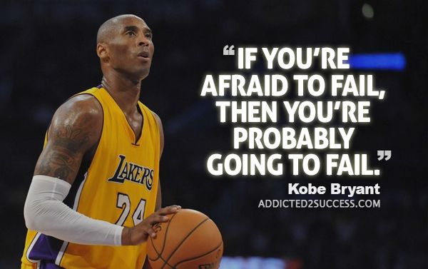
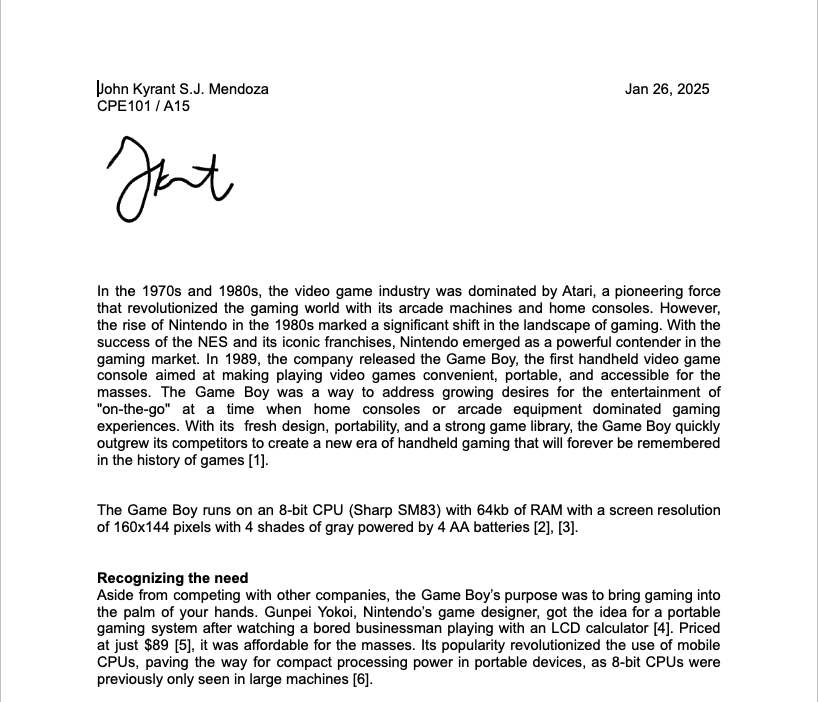
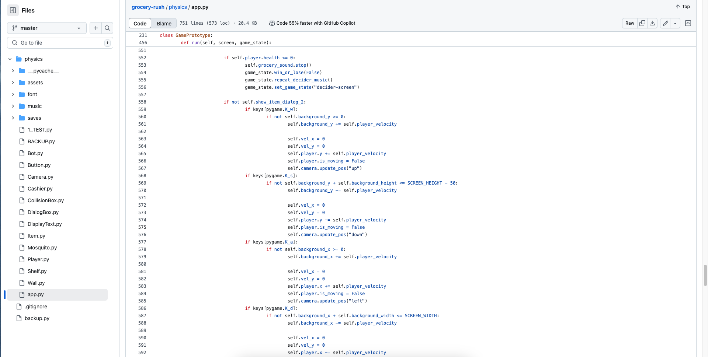
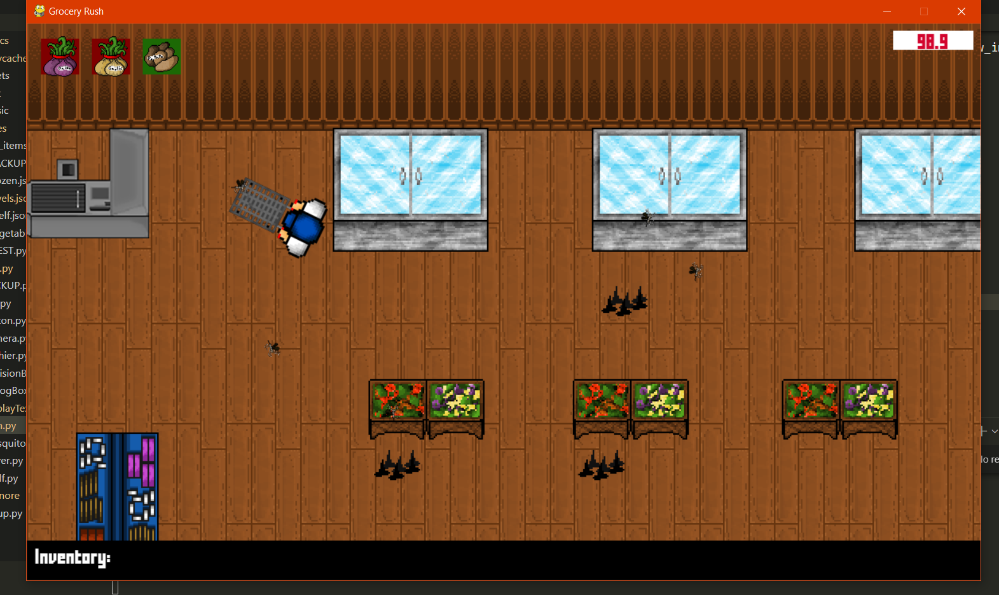
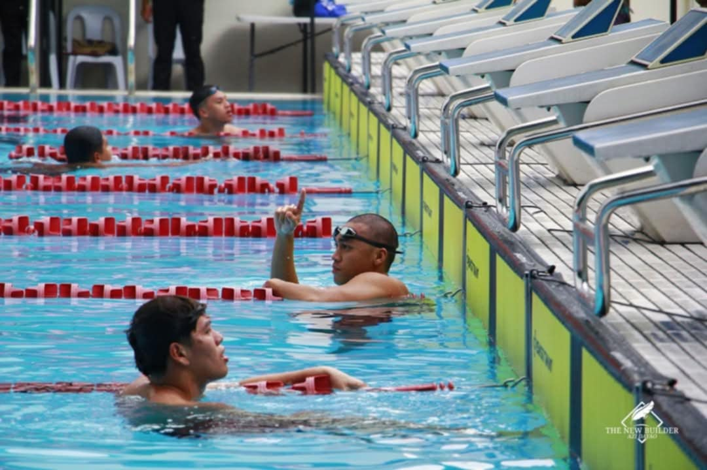

Hi, I'm John Kyrant Mendoza, a 19-year-old Computer Engineering student at Mapua University. Born and raised in Quezon City, I have a passion for coding, problem-solving, and building innovative projects. I enjoy working on software, game development, constantly exploring new ways to blend creativity with technology. Feel free to explore my projects by clicking the links above!
J.K. Times
Manila, Philippines
About Me
Course Work 1

Failure isn't the end, it's just a plot twist in the story of success. I didn't pass the Course Outcome 1 output for my CPE course, but setbacks like these are just stepping stones for growth. Every great engineer, coder, and innovator has faced challenges, and this is just one of mine. Mistakes aren't roadblocks, they're lessons in disguise, pushing me to improve and refine my skills. While it's frustrating to fall short, I believe that real progress comes from persistence, adaptation, and a willingness to keep going despite setbacks. This isn't where my journey stops it's just another challenge to overcome. I'll take this as motivation to work harder, learn from what went wrong, and come back stronger. After all, success isn't about never failing, it's about rising every time you do.
Course Work 2

For my Course Work 2 in Computer Engineering, I conducted an in-depth analysis of the Game Boy, one of the most iconic handheld gaming consoles in history. This essay explores its development process, hardware specifications, and the technological advancements that made it a groundbreaking device. I examined the key challenges faced during its creation, including hardware limitations, design constraints, and market competition. By analyzing Nintendo's innovative approach, I gained insight into how the Game Boy balanced affordability, portability, and functionality, ultimately shaping the future of mobile gaming. This coursework allowed me to explore how engineering decisions influence consumer technology and highlighted the importance of creativity and problem-solving in product development. Link to my essay.
Course Work 3
For my Course Work 3, I made a video about Photonic Computing/processors. It is a new emerging technology in the field of computer engineering. Instead of using copper, it uses light to send signals. Link to my video.
Projects
One of my hobbies is coding. I started coding when I was 10. It took me a long learning curve to fully understand the concepts. In this page I will show you some of my coding projects.


When I was SHS in MAPUA I joined a game development Competition. Our game is called grocery rush. The objective of the game is to buy the selected Items in under 100 pesos and under 100 seconds. Items are placed randomly so you have to find it. The theme of the competition was "100". I made the game in Python. I think the best part of developing this game was really writing the physics from scratch. Link to itch.io page
I think this is the best Website I made. This is for my friend's startup business. They are selling trucks. I made this with HTML as the frontend and Python in serverside. I did not use any database for this project as it is only small. I saved everything in a JSON file. It took us 3 revisions before it looked like the one above. Link to the website.
My Journey

Aside from being a student, I am also an athlete. I am a swimmer and I swam NCAA 99 and NCAA 100. My goal is to be top 1 in the coming years. I am the bald one.